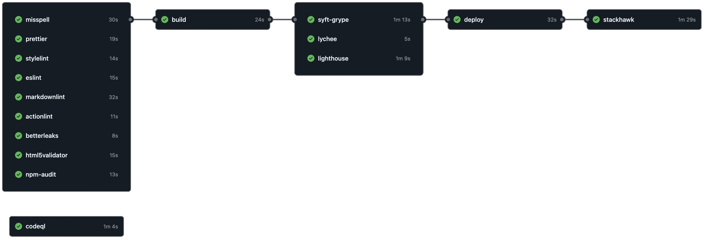

Check out the visualization project that I built during my tenure at Splunk.
Satoshi Kawasaki
US Citizen • Japanese & Chinese speaker
A self-taught coder who went on to study rocket science, bringing 8+ years of expertise in enterprise software and client-facing roles.
based in San Francisco (Duboce Triangle)
🧑🏻💻 My portfolio
- Anti-human trafficking using data scraping and Microsoft Azure Face with Global Emancipation Network.
- Detecting wildfires with IoT ground sensors with the Moraga-Orinda Fire District of CA.
- Refugee tracking and connectivity using Cisco Meraki devices with NetHope.
- City tree maintenance using machine learning with San Francisco Public Works.
| 🆓 Free | |
| Resume | HTML + CSS |
| Hosting | Cloudflare Pages |
| CI/CD | GitHub Actions |
| Style | Pico CSS |
| Icons | Font Awesome |
| 💵 Paid | |
| Domain name | Cloudflare Registrar |
Click any job (e.g., ✅ misspell) for details. Scroll horizontally to view the full pipeline.

🔁 GitHub Actions workflow configuration: ci-cd.yaml.
Automated asset generation scripts powered by Puppeteer:
-
generate-resume-pdf.js: Executes during the
buildjob to render the HTML resume as a PDF, keeping public document downloads synchronized with source updates. -
generate-lighthouse-score-img.js: Executes during the
lighthousejob to capture audit score badges dynamically for every release.
🔒 Security (DevSecOps):
- Betterleaks secret scanner as a pre-commit hook to block credential leaks before pushing to GitHub.
- Renovate bot for automated dependency monitoring and pull request updates.
-
Syft
to generate a CycloneDX Software Bill of Materials (SBOM) during
the
buildjob. This site's latest SBOM is available here. -
Grype
to perform vulnerability scanning against the SBOM and block
builds with high-severity CVEs during the
buildjob.
Lighthouse is Google's website quality analysis tool.
Click the score above or view the full details of the latest report here.
| Acronym | Meaning |
|---|---|
| FCP | First Contentful Paint |
| LCP | Large Contentful Paint |
| TBT | Total Blocking Time |
| CLS | Cumulative Layout Shift |
| SI | Speed Index |
My other code and projects: GitHub
💁🏻♂️ My talks
Selected 9 times as a featured speaker for technical sessions across Splunk annual user conferences.
| 🗣️ "Splunking the 2018 Mid-Term Election" | ||
| .conf19 | slides | video |
| 🗣️ "Get those spreadsheets into Splunk" | ||
| .conf19 | slides | video |
| 🗣️ "Speed Up Your Searches!" | ||
| .conf19 | slides | video |
| 🗣️ "Splunking refugees with help from NetHope and Cisco" | ||
| .conf19 | slides | video |
| 🗣️ "Splunking the 2016 Presidential Election" | ||
| .conf17 | slides | |
| 🗣️ "Splunking to Fight Human Trafficking" | ||
| .conf17 | slides | |
| 🗣️ "Speed Up Your Searches!" | ||
| .conf17 | slides | |
| 🗣️ "Enhancing Dashboards with JavaScript!" | ||
| .conf15 | files lost 😔 | |
| 🗣️ "I Want that Cool Viz in Splunk!" | ||
| .conf14 | files lost 😔 | |
📸 My likes (gallery)
📃 My resume
View my resume in a PDF format (ready for printing or attaching).
satoshi@hobbes3.com
LinkedIn
GitHub
Satoshi Kawasaki
satoshi@hobbes3.com
• 404-333-2310
• San Francisco, CA 94114
hobbes3.com • linkedin.com/in/hobbes3 • github.com/hobbes3
US Citizen • Japanese & Chinese speaker
hobbes3.com • linkedin.com/in/hobbes3 • github.com/hobbes3
US Citizen • Japanese & Chinese speaker
Summary
A self-taught coder who went on to study rocket science, bringing 8+ years of expertise in enterprise software and client-facing roles. Seeking an individual contributor role to leverage technical depth and direct client engagement in solving complex enterprise problems.
Skills
Languages: Python, JavaScript / TypeScript, SQL, Bash / Zsh, Vim
Infrastructure: Linux, AWS, Docker, DevOps / DevSecOps, System Engineering
AI & Engineering: Full-Stack Web, Machine Learning, LLM, Prompt Engineering
Experiences
Family Leave
2021-2026 | Tokyo and Shanghai
Full-time caretaker to my father
- Maintained technical currency through hands-on development in DevSecOps and Generative AI, building CI/CD security pipelines, containerized microservices, and RAG architectures with local LLMs and vector databases.
Splunk
2013-2020 | San Francisco
- Selected 9 times as a featured speaker for technical sessions across Splunk annual user conferences.
Senior Engineering Manager
- Managed engineering execution for Splunk for Good, driving impact and sustaining 30%+ YoY growth in recipient organizations for 3 consecutive years.
- Led cross-functional teams to ensure high adoption rates and technical delivery across global social impact organizations.
Technical Lead
- Served as the global technical lead for Splunk for Good social impact initiatives, partnering with nonprofit, academic, and government agencies to architect and implement tailored data analytics solutions.
- Helped design and launch the $100M Splunk Pledge, a 10-year global initiative delivering software, training, and technical support to social impact organizations.
Professional Services Consultant
- Advised enterprise customers on custom analytics, complex dashboard design, and advanced data visualizations using full-stack web development skills.
- Achieved 100% billable utilization during the final 12 months, driven by direct client re-engagements and repeat requests.
CA Technologies
2011-2013 | Atlanta
Associate Services Consultant
- Specialized in cloud deployment and enterprise process automation utilizing CA AppLogic and CA IT Process Automation Manager.
Education
Georgia Institute of Technology
2007-2011 | Atlanta
B.S. in Aerospace Engineering